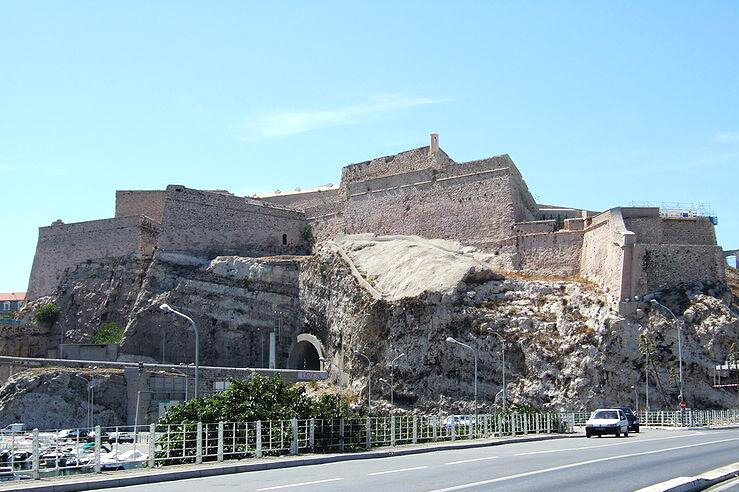

Провансальские семьи, как католические, так и протестантские, из поколения в поколение посылали сыновей в море. В таких семьях гордились тем, что их предки воевали, командовали или даже владели галерами, преданно служа королю Франции.
После 1672 г. численность галер флота временно стабилизировалась на цифре примерно двадцать пять кораблей. Но потребность в новых офицерских кадрах вновь выросла в конце семидесятых годов, когда Людовик XIV заявил о своем желании увеличить количество галер и обеспечение их экипажами. Морской министр вынужден был вновь написать на Мальту с просьбой сообщить имена двадцати рыцарей французского происхождения, «которые достигли командных должностей, являются опытными и способными к службе», уточнив при этом, что он хочет «поменьше провансальцев». С целью создания резерва кадров опытных молодых офицеров, министр своим декретом потребовал, чтобы каждая галера, выходящая в море, имела на борту не менее четырех мушкетеров. Мушкетеры должны были находиться на добровольной службе. Министр считал, что через несколько лет практики они станут «хорошими капитанами галер». Был также создан корпус прапорщиков (ensigns) для галер, чтобы молодые люди благородного происхождения получили опыт, позволяющий им достичь высших постов в Корпусе. «Сообщите мне имена тех, которые по вашему мнению подходят для этих постов, с тем, чтобы я передал эти имена королю. Но, пожалуйста, учитывайте желание Его Высочества, чтобы все они имели благородное происхождение», и вновь подчеркивает: «избегайте по возможности предлагать провансальцев».
Антипатия к провансальцам требует некоторых пояснений. Личное мнение Людовика на этот счет, должно быть, останется неизвестным. Однако он без сомнения извлек уроки, преподнесенные бурной историей Франции и в частности стремления населения Прованса и Лангедока к самостоятельности. Гражданские войны шестнадцатого века, Фронда в середине семнадцатого и постоянные восстания в различных частях королевства в период его правления и предыдущие периоды – все показывало стремление прованских аристократов к независимости от королевской власти. Это стремление особенно проявилось в ходе событий, которые имели место в Марселе в 1658-60 годы. Упомянутые события вынудили Людовика XIV возвести форт св.Николая при входе в марсельскую бухту, господствующий над городом и галерной базой, контролирующий вход в порт и служащий напоминанием о власти короля. Пушки форта были повернуты в сторону города. Комментируя строительство, Людовик сказал, "Мы знаем, что жители Марселя по-настоящему любят красивые крепости. Нам хотелось иметь свою собственную крепость на входе в наш великий порт."

Форт святого Николая в Марселе
Некий подобный подтекст, наводящий на мысли о духе его правления, обнаружился также во время посещения им Марселя в ходе поездки по средиземноморскому побережью. Людовик XIV вошел в город не через ворота, а через брешь в городской стене. Многие уроженцы средиземноморского побережья Франции, показывая примеры доблестной службы, вместе с тем демонстрировали своеволие, независимый дух и с трудном подчинялись дисциплине. По этой причине считалось, что дисциплина, честь мундира и желание служить короне у провансальцев было проще развить и утвердить, если использовать их в районах Франции, удаленных от их родных мест. Поскольку провансальцы обычно имели опыт морских профессий, таких офицеров предпочтительней было использовать для парусного флота, в то время быстро растущего, где они могли помочь решить проблему недостатка компетентных офицеров. Пропорционально большая, по мнению короля даже излишне большая, доля провансальцев уже служила в Галерном корпусе, базирующемся на Средиземном море. Необходимо было поощрять к службе на галерах людей из других частей королевства.